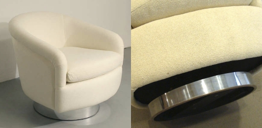

8 Summary Judgment
8.1 Standard for Summary Judgment
Fed. R. Civ. P. Rule 56
(a) Motion for Summary Judgment or Partial Summary Judgment. A party may move for summary judgment, identifying each claim or defense — or the part of each claim or defense — on which summary judgment is sought. The court shall grant summary judgment if the movant shows that there is no genuine dispute as to any material fact and the movant is entitled to judgment as a matter of law. The court should state on the record the reasons for granting or denying the motion.
(g) Failing to Grant All the Requested Relief. If the court does not grant all the relief requested by the motion, it may enter an order stating any material fact — including an item of damages or other relief — that is not genuinely in dispute and treating the fact as established in the case.
Crane v. City of Arlington, Texas (5th Cir. 2022)
In 1996, the Supreme Court approved the use of pretextual stops in Whren v. United States. Since then, pretextual stops have become a cornerstone of law enforcement practice. Police officers follow a suspicious person until they identify a traffic violation to make a lawful stop, even though the officer intends to use the stop to investigate a hunch that, by itself, would not amount to reasonable suspicion or probable cause. Often pulled over for minor traffic violations, these stops create grounds for violent—and often deadly—encounters that disproportionately harm people of color.
When Whren was decided, the Court did not have what we have now—twenty-five years of data on the effects of pretextual stops. Indeed, the Whren Court differentiated pretextual stops from “extreme practices” like the use of deadly force. Today, traffic stops and the use of deadly force are too often one and the same—with Black and Latino drivers overrepresented among those killed—and have been sanctioned by numerous counties and major police departments.
While several major cities have restricted the practice, in much of America, police traffic stops still seine for warrants despite the shadows of Monell v. Department of Social Services, where a §1983 claim can succeed against a city with a showing that city policy was the moving force behind a constitutional injury, and was implemented with deliberate indifference to the known or obvious consequence that constitutional violations would result. The potential liability attending a policy of pretextual stops aside, their empirical consequences are clear: they lead to the unnecessary and tragic ending of human life. Here, a child threw a candy cane out the window. Twenty-five minutes later, the driver, her father, was dead.
To be clear, we apply only settled laws that govern this case today, cast as they are against the larger frame of their play in the streets across the country.
I.
Tavis Crane’s estate and the passengers of Crane’s car sued Arlington Police Officer Craig Roper and the City of Arlington for the use of excessive force during a traffic stop in violation of the Fourth Amendment. The district court dismissed the passengers’ claims, finding that they could not bring claims as bystanders, and granted summary judgment to Roper and the City after determining that Roper was entitled to qualified immunity. We affirm the dismissal of the passengers’ claims and vacate the grant of summary judgment on Crane’s claims and remand to the district court for further proceedings consistent with this opinion.
On February 1, 2017, Tavis Crane was driving in Arlington, Texas with three passengers: Dwight Jefferson, Valencia Johnson, who was pregnant with Crane’s child, and Z.C., Crane’s two-year-old daughter. While Crane was stopped at a traffic light at approximately 11:38 p.m., Officer Elsie Bowden pulled up behind him. After the light turned green, Crane pulled away from the intersection and Bowden saw an object being tossed from the passenger’s side. She claims that she thought the object might be a crack pipe and called for backup; Roper responded.
Bowden turned on her police car’s lights and Crane pulled over. Bowden approached the passenger side of the vehicle and asked Jefferson what he threw out the window. Jefferson replied that the only thing he threw was a cigarette butt. Bowden asked Crane for his driver’s license and proof of insurance. Crane provided Bowden with his identification card, as he did not have a driver’s license. Bowden then noticed an object fall on the ground behind her, outside the window by Z.C. She recognized the object as the red top of a large plastic Christmas candy cane and realized the object thrown from the car was the candy cane’s clear bottom half. Bowden laughed about the misunderstanding and handed the red piece back to Z.C. But she did not send the family on. Rather, she returned to her vehicle and ran a warrant check, which found that Crane had warrants for several misdemeanors and a possible felony probation violation.
Bowden requested additional backup and confirmation of the warrants and was informed that Officer Eddie Johnson was also en route. While waiting for the other officers to arrive, she confirmed five misdemeanor warrants from Grand Prairie but was still waiting for a reply from Dallas County for the felony probation warrant, and began writing Crane a citation for driving without a license.
At 11:47 p.m., Officer Johnson arrived. Bowden informed him that the passengers had been cooperative and that she wasn’t sure if Crane even knew he had a warrant out. Roper arrived after that conversation and received no briefing, knowing only the information relayed to his in-car computer display, which showed Crane’s unconfirmed outstanding warrant for a felony probation violation.
All three officers then approached Crane’s car at 11:50 p.m., by which point Crane had rolled up his window almost entirely. Bowden stood next to Crane’s window; Roper was behind Bowden, next to Valencia Johnson, with Officer Johnson on the other side of the car, next to Jefferson. Bowden asked Crane to step out of the car because he had outstanding warrants, which Crane denied. Bowden told Crane that if he did not get out of the car, he would face additional charges. Crane said he needed to get Z.C. home to her mother. Bowden asked if he could leave Z.C. with the other passengers and alternatively offered to call someone to pick her up. Crane refused, insisting that he did not have any outstanding warrants and reiterating that he was not getting out. Bowden told him five tickets had been confirmed. Crane asked what the warrants were for. Bowden said she didn’t know yet. Bowden told Crane, “I need you to step out of the car, honey. Tavis if you go and do something stupid then we are gonna be breaking windows, it’s gonna get crazy, it ain’t worth it.”
Officer Johnson ordered Jefferson, sitting in the passenger seat, to turn off the car and give him the key. Jefferson began moving his hand toward the key to comply, but Crane told him to stop. Roper then ordered Valencia Johnson to unlock the rear driver’s side door where she was seated; she did. Roper opened the door, unholstered his pistol, and ordered everyone to put their “f—ing hands up.” Crane, Jefferson, and Valencia Johnson all put their hands up. He initially pointed his pistol at Jefferson before entering the car, climbing over Valencia Johnson, and pointing his gun at Crane.
According to the passengers, Roper put his arm around Crane’s neck. Roper contends that he grabbed the hood of Crane’s sweatshirt. All three officers continued to order Crane to open the door and turn the car off. Officer Johnson circled behind Crane’s car to move next to Bowden as she shouted “Tavis don’t do it.” The car engine began to rev, and the car shook as the brake lights turned on and off sporadically. Bowden reached for Roper in the back seat, and told Roper three times to “get out” of the car. Roper remained in the car. Officer Johnson broke the window next to Crane with his baton as Bowden began to move toward the rear of the car.
The passengers contend that when Crane, with Roper’s gun pointed at him, moved his hand to turn off the car in compliance with Roper’s order, Roper shot him, his head fell backwards, the engine revved and the car lurched backward, striking Bowden—by now behind the car—before moving forward and running over Bowden again and speeding off.
Roper claims that Crane shifted the car in gear while the two struggled, and that it was only after the car ran over Bowden and after Roper warned Crane that he would kill him if Crane did not stop the car that Roper shot Crane twice. Roper claims that the first two shots “did not cause Crane to stop the vehicle, so he fired two other shots.”
After Roper shot Crane, the car careened down the road and Roper took the keys out of the ignition and steered the car to a stop. Officer Johnson caught up in his squad car and told Roper to pull Crane from the driver’s seat and perform CPR. Roper continued to shout and curse at Crane, asking why he had not stopped, but Crane was silent. An autopsy concluded that Crane was shot four times and died of gunshot wounds to his abdomen.
II.
On January 31, 2019, Crane’s mother, as the administrator of Crane’s estate and on behalf of his surviving children, and the other passengers filed a 42 U.S.C. §1983 claim against the City of Arlington and Officer Roper, individually and in his official capacity. The plaintiffs allege that Roper violated their Fourth Amendment rights and that the City is liable under Monell v. Department of Social Services.
The City and Roper moved to dismiss the plaintiffs’ claims. The district court concluded that the passengers—Jefferson, Valencia Johnson, and Z.C.—could not bring claims as bystanders and dismissed their claims with prejudice but denied the motions to dismiss Crane’s claims.
Asserting qualified immunity, Roper then moved for summary judgment, which the district court granted. The district court acknowledged that Valencia Johnson and Roper presented different accounts of when the first shot occurred, but found that “a reasonable jury could not believe the passengers’ account of the shooting.” Finding Roper entitled to qualified immunity, the district court dismissed Crane’s claims against Roper and the City with prejudice. The plaintiffs timely appealed the order on the motion to dismiss and the grant of summary judgment.
IV.
First, we review the district court’s grant of summary judgment. “When a defendant official moves for summary judgment on the basis of qualified immunity, ‘the burden then shifts to the plaintiff, who must rebut the defense by establishing a genuine fact issue as to whether the official’s allegedly wrongful conduct violated clearly established law.’” All facts must be viewed in the light most favorable to the nonmovant and all justifiable inferences must be drawn in his favor.
When there is video evidence in the record, courts are not bound to accept the nonmovant’s version of the facts if it is contradicted by the video. But when video evidence is ambiguous or incomplete, the modified rule from Scott v. Harris has no application. Thus, “a court should not discount the nonmoving party’s story unless the video evidence provides so much clarity that a reasonable jury could not believe his account.”
The district court acknowledged the competing factual accounts—specifically when Roper shot Crane—but relied on the dashcam video from Bowden’s patrol car to reject Crane’s account and adopt Roper’s account. But the video does not clearly contradict Crane’s account of events such that the district court was entitled to adopt Roper’s factual account at the summary judgment stage. “Scott was not an invitation for trial courts to abandon the standard principles of summary judgment by making credibility determinations or otherwise weighing the parties’ opposing evidence against each other any time a video is introduced into evidence.”
What happened inside Crane’s car is not visible in the dashcam video. As such, the video does not resolve the relevant factual disputes. It is not clear from the video when Roper shot Crane, when Crane became unconscious, whether the car moved before or after Roper shot Crane, and whether Roper had his arm around Crane’s neck or was grabbing Crane’s sweatshirt. Because the video evidence does not clearly contradict Crane’s account, for purposes of this appeal, we must take Crane’s account as true—that Roper had Crane in a chokehold and that Roper shot Crane before the car began to move.
The district court found that the gear could change and the car could move only with the conscious intention of Crane. But that conclusion ignores the other plausible explanation that the gears were shifted during the struggle between Crane and Roper, as Crane attempted to comply with Roper, and that the chokehold caused Crane to press down on the accelerator as an attempt to relieve the stress on his neck, as opposed to attempting to flee. When two conclusions are plausible, at the summary judgment stage, we must accept as true that which is most favorable to the nonmovant. The district court erred by applying its own interpretation of the video and accepting Roper’s factual account over Crane’s of what occurred inside the car. “At the summary judgment stage the judge’s function is not himself to weigh the evidence and determine the truth of the matter,” that job is reserved for the jury.
A.
Next, we must consider whether Roper is entitled to qualified immunity under Crane’s account of events. We hold he is not at this stage.
“The doctrine of qualified immunity shields officials from civil liability so long as their conduct does not violate clearly established statutory or constitutional rights of which a reasonable person would have known.” When reviewing a motion for summary judgment based upon the affirmative defense of qualified immunity, we engage in a two-pronged inquiry. First, the constitutional question, asking whether the officer’s conduct violated a federal right. Second, asking whether that right was clearly established at the time of the violation.
The constitutional question in this case is governed by the principles enunciated in Tennessee v. Garner and Graham v. Connor, which establish that claims of excessive force are determined under the Fourth Amendment’s “objective reasonableness” standard. Specifically regarding deadly force, Justice White explained in Garner that it is unreasonable for an officer to “seize an unarmed, non-dangerous suspect by shooting him dead;” but, “where the officer has probable cause to believe that the suspect poses a threat of serious physical harm, either to the officer or to others, it is not constitutionally unreasonable to prevent escape by using deadly force.”
We analyze the reasonableness of the force used under factors drawn from Graham, including the severity of the crime at issue, whether the suspect poses a threat to the safety of the officers or others, and whether the suspect is actively resisting arrest or attempting to evade arrest. While all factors are relevant, the “threat-of-harm factor typically predominates the analysis when deadly force has been deployed.” The reasonableness is judged from the perspective of a reasonable officer on the scene, and only the facts then knowable to the defendant officers may be considered.
First, we address whether Crane posed an immediate threat to the safety of the officers. Accepting the facts as the passengers allege, Crane was shot while unarmed with Roper’s arm around his neck. Roper first argues that he had a reasonable fear that Crane might have a weapon. But from his position, Roper could see if Crane was reaching for a gun, as could the other officers outside the vehicle, yet none of them—including Roper—reported a suspicion of a weapon. Roper could not have reasonably suspected that Crane had a weapon.
Roper alternatively contends that the threat came from the car. As seen in the video, prior to the first shot, Crane’s car was parked, the engine revved, and the tires spun. As the district court noted, Roper was inside the car with the door open, so had Crane sped off, Roper could have fallen out and been seriously injured. However, accepting the facts as Crane alleges, Roper shot Crane while the car was still in park and before the car began to move. As Roper was not at imminent risk of being expelled from a parked car, the vehicle did not in this sense pose a serious threat. Roper also asserts that Bowden and Officer Johnson were in danger, but at the time Roper shot Crane, Bowden and Officer Johnson were standing to the side of Crane’s car, not behind it, unlikely to be hit by the car. Ultimately, the car was not a threat until it began to move, which did not occur until Roper shot Crane. Whether Roper’s use of deadly force was reasonable may well turn on whether the car was in park or moving at the moment Roper shot Crane. But that is a question for the jury.
Finally, this Court considers the speed with which an officer resorts to force where officers deliberately, and rapidly, eschew lesser responses when such means are plainly available and obviously recommended by the situation. Officer Bowden demonstrated an admirable attempt to negotiate with Crane. Roper, on the other hand, shot Crane less than one minute after he drew his pistol and entered Crane’s backseat aside a pregnant woman and a two-year-old. Not only was the option to get out of the car—as opposed to shooting Crane—plainly available, but Bowden, reached into the backseat to touch Roper, repeatedly urging Roper to “get out” of the car, reflecting the sound view that they could not use deadly force to keep Crane from fleeing. But Roper remained in the car, shooting Crane just seconds later. A reasonable jury could conclude that reasonable officers, like Bowden, would have been keenly aware that deadly force should not have been used, and that instead, Crane should have been let go to take his child home; that Crane did not pose a threat of harm such that the use of deadly force was reasonable. The threat-posed factor favors Crane.
While the remaining two factors do not weigh as heavily upon our analysis, they yet demand attention. As to the severity of the crime at issue, Roper was attempting to effect an arrest for an unconfirmed felony probation violation warrant and multiple confirmed misdemeanor warrants. Although police officers have the right to order a driver to exit the car, they cannot use excessive force to accomplish that end. Reasonable officers could debate the level of force required to effect an arrest given the severity of the violations at issue, but neither of the other officers felt the need to enter the car or draw their pistols to address the severity of the violation. Rather, the arresting officer attempted to intervene to stop Roper. This factor favors Crane.
The third Graham factor is whether Crane was actively resisting arrest or attempting to evade arrest by fleeing. “Officers may consider a suspect’s refusal to comply with instructions during a traffic stop in assessing whether physical force is needed to effectuate the suspect’s compliance.” While Crane was compliant with Bowden’s initial requests, he refused to comply once the officers attempted to arrest him. It is clear from the video that the officers attempted to arrest Crane peacefully, but he refused to cooperate. Bowden first told Crane to step out of the car and within one minute she informed him that there was an outstanding warrant for his arrest. Two minutes later, Roper entered the vehicle and applied physical force, grabbing Crane, and pointing his gun at him. The other officers continued to order Crane to turn off the vehicle. On the present record, Roper shot Crane within 30 seconds of entering Crane’s vehicle, as Crane reached to turn off the vehicle. The car was in park and Crane pressed the accelerator to relieve the pressure on his neck. Taking the facts as we must, a jury may well conclude that it was not reasonable for Roper to believe that Crane was attempting to flee or that any such attempt to do so posed a threat to life. Additionally, “officers must assess not only the need for force, but also ‘the relationship between the need and the amount of force used.’” The only confirmed warrants against Crane were for misdemeanors. A jury could reasonably find that the degree of force the officers used was not justifiable under the circumstances. This factor favors Crane. In sum, with all three of the Graham factors favoring Crane, Crane prevails.
Crane argues, notwithstanding the Graham factors, that Roper created the situation by escalating the confrontation—entering the car and grabbing Crane. But our precedent dictates that the threat be examined only at the moment deadly force is used and that an officer’s conduct leading to that point is not considered. Roper’s actions prior to the moment he used deadly force, escalatory as they were, cannot be considered. The issue is not whether Roper created the need for deadly force, the issue is whether there was a reasonable need for deadly force.
Under the Graham factors, Roper’s use of deadly force was unreasonable. Because Roper’s use of force in this situation was unreasonable, violating Crane’s Fourth Amendment right, we now turn to the clearly established prong.
B.
The second step of the qualified immunity inquiry is asking “whether the violated constitutional right was clearly established at the time of the violation.” The purpose of this inquiry is to determine whether the officer “had fair notice that his conduct was unlawful.”
“It has long been clearly established that, absent any other justification for the use of force, it is unreasonable for a police officer to use deadly force against a fleeing felon who does not pose a sufficient threat of harm to the officer or others.” This applies not only to a felon fleeing on foot, but also to one fleeing in a motor vehicle. We note that the Supreme Court and this court decline to apply Garner with a high-level of generality. While “ protect ‘all but the plainly incompetent or those who knowingly violate the law.’” Here, precedent provided Roper with fair notice that using deadly force on an unarmed, albeit non-compliant, driver held in a chokehold in a parked car was a constitutional violation beyond debate.
At the time of Roper’s use of deadly force, “the law was clearly established that although the right to make an arrest ‘necessarily carries with it the right to use some degree of physical coercion or threat thereof to effect it,’” the constitutionally “permissible degree of force depends on the severity of the crime at issue, whether the suspect posed a threat to the officer’s safety, and whether the suspect was resisting arrest or attempting to flee.” In Garner, the Supreme Court made clear that “where the suspect poses no immediate threat to the officer and no threat to others, the harm resulting from failing to apprehend him does not justify the use of deadly force to do so.”
Here, under Crane’s account, Crane was shot while he was held in a chokehold in a parked car while evading arrest for several confirmed misdemeanors and an unconfirmed felony parole violation. Roper was on notice that the use of deadly force is objectively reasonable only where an officer has “a reasonable belief that he or the public was in imminent danger…. of death or serious bodily harm.” Again, Roper’s alleged belief that Crane had a gun was not reasonable, nor was his belief that a parked car posed a danger to himself, the passengers, or the other officers standing on the side of the car. When we accept the facts as we must, this case is an obvious one. “While the Fourth Amendment’s reasonableness test is ’not capable of precise definition or mechanical application,” the test is clear enough that Roper should have known he could not use deadly force on an unarmed man in a parked car.
Because the facts seen in the light most favorable to Crane indicate a violation of a clearly established right and material facts are in dispute, the district court erred in granting summary judgment to Roper and perforce dismissing the City.
V.
We turn to the claims of the three passengers—Jefferson, Valencia Johnson, and Z.C.—against Roper and the City, suing under §1983 and claiming that Roper’s actions violated their Fourth Amendment rights. The passengers argue that they are entitled to damages under two theories of liability.
First, they claim that they suffered emotional trauma by witnessing the excessive use of force against Crane. But witnessing the use of force is not enough. “Section 1983 imposes liability for violations of rights protected by the Constitution, not for violations of duties of care arising out of tort law.” “Negligent infliction of emotional distress is a state common law tort; there is no constitutional right to be free from witnessing police action.” Thus, bystanders may recover when they are subject to an officer’s excessive use of force such that their own Fourth Amendment right is violated; however, bystanders cannot recover when they only witness excessive force used upon another.
Second, the passengers claim that Roper used excessive force when he pointed his gun at them while entering the car, leading to psychological injuries. The district court dismissed the passengers’ claims for failing to “establish that they were the objects of Roper’s actions or that Roper’s actions physically injured them.”
There is no express requirement for a physical injury in an excessive force claim, but even if the passengers stated a plausible claim for psychological injuries, Roper is entitled to qualified immunity. “Fourth Amendment jurisprudence has long recognized that the right to make an arrest or investigatory stop necessarily carries with it the right to use some degree of physical coercion or threat thereof to effect it.” We previously held that pointing a gun can be reasonable given the circumstances, and that “the momentary fear experienced by the plaintiff when a police officer pointed a gun at him did not rise to the level of a constitutional violation.” Here, there was no unreasonable use of force against the passengers, so no constitutional injury occurred.
As we affirm the dismissal of the passengers’ claims against Roper for a failure to state a claim in the absence of a constitutional injury, we also affirm the dismissal of their claims against the City.
We AFFIRM the dismissal of the passengers’ claims and VACATE the grant of summary judgment on Crane’s claims and REMAND to the district court for further proceedings consistent with this opinion.
8.2 Burden of Production
Fed. R. Civ. P. Rule 56
(c) Procedures.
(1) Supporting Factual Positions. A party asserting that a fact cannot be or is genuinely disputed must support the assertion by:
(A) citing to particular parts of materials in the record, including depositions, documents, electronically stored information, affidavits or declarations, stipulations (including those made for purposes of the motion only), admissions, interrogatory answers, or other materials; or
(B) showing that the materials cited do not establish the absence or presence of a genuine dispute, or that an adverse party cannot produce admissible evidence to support the fact.
(2) Objection That a Fact Is Not Supported by Admissible Evidence. A party may object that the material cited to support or dispute a fact cannot be presented in a form that would be admissible in evidence.
(3) Materials Not Cited. The court need consider only the cited materials, but it may consider other materials in the record.
(4) Affidavits or Declarations. An affidavit or declaration used to support or oppose a motion must be made on personal knowledge, set out facts that would be admissible in evidence, and show that the affiant or declarant is competent to testify on the matters stated.
(d) When Facts Are Unavailable to the Nonmovant. If a nonmovant shows by affidavit or declaration that, for specified reasons, it cannot present facts essential to justify its opposition, the court may:
(1) defer considering the motion or deny it;
(2) allow time to obtain affidavits or declarations or to take discovery; or
(3) issue any other appropriate order.
(e) Failing to Properly Support or Address a Fact. If a party fails to properly support an assertion of fact or fails to properly address another party’s assertion of fact as required by Rule 56(c), the court may:
(1) give an opportunity to properly support or address the fact;
(2) consider the fact undisputed for purposes of the motion;
(3) grant summary judgment if the motion and supporting materials — including the facts considered undisputed — show that the movant is entitled to it; or
(4) issue any other appropriate order.
Note: “Materials in the Record”: Discovery
Rule 56(c) requires that “A party asserting that a fact cannot be or is genuinely disputed must support the assertion by citing to particular parts of materials in the record” or “showing that the materials cited do not establish the absence or presence of a genuine dispute, or that an adverse party cannot produce admissible evidence to support the fact.” The “materials in the record” are produced in the discovery process, governed by FRCP Rules 26-32.
Rule 26 sets out general provisions for discovery. First, the parties must disclose certain information at the outset of the case:
Fed. R. Civ. P. Rule 26(a)
(1) Initial Disclosure.
(A) In General. Except as exempted by Rule 26(a)(1)(B) or as otherwise stipulated or ordered by the court, a party must, without awaiting a discovery request, provide to the other parties:
(i) the name and, if known, the address and telephone number of each individual likely to have discoverable information—along with the subjects of that information—that the disclosing party may use to support its claims or defenses, unless the use would be solely for impeachment;
(ii) a copy—or a description by category and location—of all documents, electronically stored information, and tangible things that the disclosing party has in its possession, custody, or control and may use to support its claims or defenses, unless the use would be solely for impeachment;
(iii) a computation of each category of damages claimed by the disclosing party—who must also make available for inspection and copying as under Rule 34 the documents or other evidentiary material, unless privileged or protected from disclosure, on which each computation is based, including materials bearing on the nature and extent of injuries suffered; and
(iv) for inspection and copying as under Rule 34, any insurance agreement under which an insurance business may be liable to satisfy all or part of a possible judgment in the action or to indemnify or reimburse for payments made to satisfy the judgment.
(2) Disclosure of Expert Testimony.
- (A) In General. In addition to the disclosures required by Rule 26(a)(1), a party must disclose to the other parties the identity of any witness it may use at trial to present evidence under Federal Rule of Evidence 702, 703, or 705.
(3) Pretrial Disclosures.
(A) In General. In addition to the disclosures required by Rule 26(a)(1) and (2), a party must provide to the other parties and promptly file the following information about the evidence that it may present at trial other than solely for impeachment:
(i) the name and, if not previously provided, the address and telephone number of each witness—separately identifying those the party expects to present and those it may call if the need arises;
(ii) the designation of those witnesses whose testimony the party expects to present by deposition and, if not taken stenographically, a transcript of the pertinent parts of the deposition; and
(iii) an identification of each document or other exhibit, including summaries of other evidence—separately identifying those items the party expects to offer and those it may offer if the need arises.
The parties may seek further information through various discovery methods:
- • Depositions: recorded testimony of parties and other potential witnesses, either by oral examination (Rule 30) or written questions (Rule 31); deposition testimony may be admitted in court under certain conditions (Rule 31);
- • Interrogatories: written questions directed to a party (Rule 33);
- • Requests for production of documents or things (Rule 34);
- • Physical and mental examinations of a party (Rule 35);
- • Requests for admission (Rule 36).
Rule 26(b)(1) defines the scope of discovery:
Unless otherwise limited by court order, the scope of discovery is as follows: Parties may obtain discovery regarding any nonprivileged matter that is relevant to any party’s claim or defense and proportional to the needs of the case, considering the importance of the issues at stake in the action, the amount in controversy, the parties’ relative access to relevant information, the parties’ resources, the importance of the discovery in resolving the issues, and whether the burden or expense of the proposed discovery outweighs its likely benefit. Information within this scope of discovery need not be admissible in evidence to be discoverable.
Rule 26(b) also sets certain limits on discovery and governs the timing of requests.
The court may impose sanctions on parties for failure to make required disclosure or cooperate in the discovery process. Rule 37
In addition to the materials produced in discovery, the record may also include stipulations by the parties, i.e. agreements as to certain facts. The parties may stipulate to facts provisionally, for the purpose of summary judgment only, while reserving the right to contest the facts at trial if the court does not grant summary judgment.
Stout v. Vincent (5th Cir. 2018)
We decide whether the district court erred when granting summary judgment in favor of a police officer on the racial profiling claims of a black couple. The district court found that the couple failed to raise any genuine issue of material fact showing that the officer violated their equal protection rights under the Fourteenth Amendment. We affirm.
Facts and Proceedings
Cathryn Scott Stout and Raymond Montgomery, Jr., who are black, were traveling together from Memphis, Tennessee in a Lexus sport utility vehicle (“SUV”) on Interstate 55 through central Mississippi. Montgomery noticed Mississippi Highway Safety Patrol (“MHSP”) cars parked on the median. Soon after they passed the cars, Trooper Patrick Wall drove up along the side of their SUV in the left lane and looked at them. He then dropped behind their vehicle and turned on his lights and siren. Montgomery, who was driving, pulled over, but he did not feel nervous because he was not speeding and he believed he had done nothing wrong.
Trooper Wall asked Montgomery to step out of the car to show him that the SUV’s license plate was partially obscured by a tag holder. The tag holder bore the logo and colors of the Alpha Kappa Alpha Sorority, Inc. (“AKA”), a black sorority to which Stout belonged. Trooper Wall explained to Montgomery that the MHSP was attempting to “crack down” on drivers with tag holders that obscured their plates. Trooper Wall said he would not issue a ticket for the obscured plate, but he asked for Montgomery’s license and permission to search the vehicle. Montgomery refused consent for the search.
Trooper Wall called Staff Sergeant Vincent for backup, informing him that Stout and Montgomery were “argumentative and difficult to deal with.” When Officer Vincent arrived, Trooper Wall told him that Montgomery exhibited unusual signs of nervousness and the SUV’s occupants had offered conflicting stories about where they were traveling, the purpose of their trip, and how long they intended to stay in Mississippi. Officer Vincent questioned the passengers himself. Stout informed Officer Vincent that she was in the state to perform research for her doctoral degree at Saint Louis University. But Officer Vincent had trouble remembering this fact once litigation had commenced. He remembered only that one of the passengers had explained that they were traveling to a concert.1
1 (n.1 in opinion) Officer Vincent remembered that the passengers gave him conflicting answers as to the purpose and length of their stay in Mississippi. Montgomery and Stout deny that they gave conflicting answers to these questions. Because of the procedural posture, we view all factual disputes in a light most favorable to Appellants.
Officer Vincent informed Stout and Montgomery that troopers can run the license of all individuals in a car to check their criminal histories and ensure that they are not wanted for arrest. He further explained that the Mississippi Department of Public Safety uses minor infractions as a pretext to stop for criminal investigations. He said, “The more people we contact, the more people we check out, the more likely we are to catch somebody up to no good.”
Trooper Wall ran a check on Montgomery’s Tennessee driver’s license. The computer showed that he had prior arrests for both possession of narcotics and intent to distribute narcotics. Officer Vincent’s training and many years of experience in drug interdiction made him aware that Interstate 55 is used often to transport drugs, particularly between Jackson, Mississippi and Memphis, Tennessee. Officer Vincent requested permission to search the vehicle, but was denied.
Officer Vincent called for a K-9 officer, and Deputy Joseph Mangino soon arrived with his dog. Officer Vincent instructed Montgomery and Stout to turn off their car, get out of the vehicle, and stand away from each other and the car while the dog sniffed around the SUV.2 When the dog picked up a “suspicious” scent from inside the vehicle, the officers searched the SUV.3 The inspection was thorough, and more than an hour passed from the initiation of the stop until the officers finally allowed Appellants to leave without issuing a citation.
2 (n.2 in opinion) Officer Vincent told Montgomery and Stout that the dog would sit and freeze if it detected drugs. They never saw the dog sit and freeze. Stout began recording the beginning of the inspection on her phone’s camera. Vincent ordered her to put the camera away, and she complied. The limited footage she obtained does not show the dog barking or making any other signals to the troopers.
3 (n.3 in opinion) The parties’ accounts of the search differ. Stout and Montgomery insist that no drugs were found in the vehicle. Officer Vincent claims he found marijuana residue on the floorboard of the vehicle and a piece large enough to be easily identified as marijuana. Because the quantity of the marijuana was small, the officers did not issue a citation. We reiterate that we view all factual disputes in a light most favorable to Appellants
Stout and Montgomery sued Officer Vincent, seeking injunctive relief and damages for violation of their Fourteenth Amendment rights under 42 U.S.C. §1983. Specifically, they alleged that impermissible considerations of race motivated their extended detention by Officer Vincent. Officer Vincent moved for summary judgment on the basis of qualified immunity, and the district court granted his motion, concluding Appellants “have not presented any evidence” in support of their claim that Officer Vincent’s conduct “was at least partially based on their race.” Stout and Montgomery appealed.
On appeal, Stout and Montgomery raise only one issue: whether the district court erred when concluding there was no genuine issue of material fact that Officer Vincent’s actions were impermissibly motivated by race.
Summary Judgment
Under Federal Rule of Civil Procedure 56, a “court shall grant summary judgment if the movant shows that there is no genuine dispute as to any material fact and the movant is entitled to judgment as a matter of law.” Fed. R. Civ. P. 56(a). The Supreme Court has explained that “a party seeking summary judgment always bears the initial responsibility of informing the district court of the basis for its motion, and identifying those portions of the record which it believes demonstrate the absence of a genuine issue of material fact.” Celotex Corp. v. Catrett. But the moving party has no need to negate its opponents’ claims.
If the moving party meets its burden, “the nonmovant must go beyond the pleadings and designate specific facts showing that there is a genuine issue for trial.” The nonmovant’s “burden is not satisfied with some metaphysical doubt as to the material facts, by conclusory allegations, by unsubstantiated assertions, or by only a scintilla of evidence.”
A court must view all evidence “in the light most favorable to the opposing party.” In Tolan v. Cotton, the Supreme Court stressed “the importance of drawing inferences in favor of the nonmovant” in qualified immunity cases.If a district court credits evidence of the party seeking summary judgment but fails to properly acknowledge key evidence offered by the nonmoving party, it misapprehends the summary judgment standard.
Fourteenth Amendment Racial Profiling
“The Constitution prohibits selective enforcement of the law based on considerations such as race.” “The constitutional basis for objecting to intentionally discriminatory application of laws is the Equal Protection Clause.”
Claims of racially selective law enforcement “draw on ordinary equal protection standards.” “To state a claim of racial discrimination under the Equal Protection Clause and section 1983, the plaintiff must allege and prove that she received treatment different from that received by similarly situated individuals and that the unequal treatment stemmed from a discriminatory intent.”
In another context, we have said that a plaintiff’s “subjective belief of discrimination, however genuine, cannot be the basis of judicial relief.” Thus, a plaintiff’s “subjective belief that he was discriminated against, standing alone, is not adequate evidence to survive a motion for summary judgment.”
Finally, “discriminatory intent of one official may not be imputed to another for purposes of imposing individual liability under the civil rights laws.”
The district court concluded that Montgomery and Stout “have not presented any evidence to support their claim” that Officer Vincent’s decision to detain them was “at least partially based on their race.” The district court further concluded that Montgomery and Stout “have likewise not shown that their race played any role whatsoever in Vincent’s formulation of a reasonable Montgomery have failed to produce any material evidence showing that race motivated Officer Vincent’s conduct, we need not address the issue. suspicion or wrongdoing, or in the actions that were taken by him to dispel that suspicion.”
On appeal, Montgomery and Stout detail the evidence they claim demonstrates Officer Vincent’s discriminatory intent and unequal treatment:
• They were traveling from Memphis, Tennessee to Jackson, Mississippi, which are both predominantly black cities.
• They are both black.
• They were driving a Lexus SUV.
• Stout believed “they were being held because they are African American and for no other reason.”
• Montgomery also believed “it appeared that the only reason Officer Vincent was keeping them was that they were black and driving a Lexus.”
• Officer Vincent later remembered that Stout and Montgomery had indicated that the purpose of their trip to Mississippi was a concert when in fact they had told him they were in Mississippi for Stout’s graduate student research. According to Stout and Montgomery, this lapse is evidence that Officer Vincent had discriminatory intent because “he did not see a highly educated Black woman and her partner; he saw two Black people in a nice car going to a concert.”
• No trooper issued them a ticket or citation, even though the officers claim they found marijuana in the SUV.
• They both stated there was no marijuana in the car that day.
• On the day before Officer Vincent detained Appellants, the City of Mound Bayou approved a resolution against the racial profiling of people of color by the MHSP. The mayor of Winstonville also condemned racial profiling of black people by the MHSP. Officer Vincent has been with the MHSP since 1997.
In light of this evidence, Montgomery and Stout argue that the district court misapplied the summary judgment standard when it concluded that they failed to raise a genuine issue of material fact. They stress that, after the Supreme Court’s decision in Tolan, this evidence must be viewed as a whole, and not in individual pieces. And the evidence must be viewed in a light most favorable to them.
The Supreme Court’s decision in Tolan, however, does not relieve a nonmoving party of its burden to “go beyond the pleadings and designate specific facts showing that there is a genuine issue for trial” after a moving party meets its “initial responsibility.” Nor does it allow nonmovants to satisfy their burden with metaphysical doubt, conclusory allegations, unsubstantiated assertions, or a scintilla of evidence.
We have no reason to doubt the genuineness of Montgomery and Stout’s subjective belief that Officer Vincent detained them only because they are black. But we cannot accept such evidence as a basis for providing judicial relief. Because we are not permitted to impute any alleged discriminatory intent of Trooper Wall to Officer Vincent for the purpose of imposing individual liability under §1983, we cannot consider any evidence of racial profiling that occurred before Officer Vincent arrived on the scene. Moreover, we cannot attribute the general evidence of racial profiling by the MHSP condemned by the mayor of Winstonville and the City of Mound Bayou to Officer Vincent.
With this evidence removed, all that remains of Appellants’ case is that they, a black couple, were detained when driving a nice car on a Mississippi road by an officer who did not write them a ticket and who could not remember their purpose for visiting the state. Even when viewed as a whole, this evidence fails to show that there is a genuine issue for trial regarding whether Officer Vincent treated them unequally and acted with discriminatory intent.
Although Appellants dispute Trooper Wall’s report that they were acting nervous and that they gave conflicting accounts as to the purpose of their trip in Mississippi, this does not create a fact issue because Officer Vincent was allowed to rely on the information provided to him by a fellow officer. In light of the report he received from Trooper Wall, the fact that Montgomery had previously been arrested for distributing narcotics, and the fact that Interstate 55 is often used to transport drugs, Officer Vincent had nondiscriminatory reasons to continue detaining Appellants after the initial stop and request assistance from the K-9 officer.
Because Appellants failed to provide any evidence that Officer Vincent acted with discriminatory intent or treated them unequally, they cannot show there are any genuine issues of fact warranting a trial on their Fourteenth Amendment claim of racial profiling. Accordingly, we conclude the district court did not err when it granted summary judgment in favor of Officer Vincent.
Elden v. Nirvana, L.L.C., No. CV 21-6836 FMO (AGRx) (C.D.Cal. Sept. 30, 2025)
Background
In 1991, Spencer Elden, then a four-month-old infant, was photographed naked in a pool for the cover of Nirvana’s “Nevermind” music album. The album cover depicted plaintiff underwater, “grabbing for a dollar bill” on a fishook that had been superimposed onto the photograph. The “Nevermind” album was released in September 1991, and was widely distributed commercially, becoming “a platinum record only months after its release.”

Plaintiff filed the instant action nearly 30 years after the album’s release. Plaintiff brings a claim under 18 U.S.C. § 2255(a), which provides a civil remedy for individuals who were victims of certain enumerated crimes while they were minors. Plaintiff alleges that “Nirvana’s Nevermind album cover constitutes commercial child pornography,” and that defendants have engaged in “ongoing violations” of multiple provisions of 18 U.S.C. § 2252A—a criminal statute penalizing certain activities relating to child pornography—because they “knowingly possessed, transported, reproduced, advertised, promoted, presented, distributed, provided, and/or obtained” the album cover. According to plaintiff, the continued use of the image on the album cover has “caused, and continues to cause, him serious injury including, without limitation, physical, psychological, financial, and reputational damages.” Plaintiff seeks “to recover for injuries … sustained during the ten years preceding the filing of this action, and injuries he has sustained since then.” He requests either actual damages or statutory liquidated damages in the amount of $150,000, punitive damages, and equitable relief, including “an injunction against future sales, marketing or distribution” and “prohibiting the Defendants from continuing to engage in the injurious acts.”
Statement of Facts
In 1991, Spencer Elden, then a four-month-old infant, was photographed naked in a pool for the cover of Nirvana’s “Nevermind” music album. The album cover depicts a naked baby (plaintiff) floating underwater as he appears to reach for a dollar bill on a fishhook.
The circumstances of the album cover’s creation are largely undisputed. At the time, Nirvana had been signed to a small, independent record label for years, but in 1991, the band signed with a major label—Geffen Records—that represented several major artists. In advance of the album’s release, the band worked with a Geffen art director, Robert Fisher, to develop the artwork for the album cover. The band initially floated the idea of an underwater childbirth and after looking for images, Fisher showed the band a stock photo of a baby swimming underwater in a pool, which the band liked. Because the stock image was prohibitively expensive, Geffen hired photographer Kirk Weddle, who specialized in underwater photography, to recreate the image.
Weddle asked his close friends, Rick and Renata Elden, whether they were interested in having their infant son participate in an underwater photo shoot for an album cover. Plaintiff’s parents agreed.
The photo shoot took place at the Rose Bowl Aquatics Center, a public pool. Weddle, plaintiff, plaintiff’s parents, Weddle’s assistant, and the lifeguard on duty were present. During the photo shoot, plaintiff’s parents were in the pool with plaintiff; one parent released him into the water for a few seconds while Weddle took photographs, and the other parent took plaintiff out of the water, and passed him back. Weddle photographed plaintiff as he appeared after being released into the pool.
None of the individuals present expressed any sexual intent during the photo shoot. Plaintiff’s parents did not consider the image to be child pornography, and did not ask defendants to change or censor the image. After the photo was taken, a dollar bill and fishook were superimposed onto the image to create the album cover.
The “Nevermind” album was released in 1991, and as of last year, had sold 40 million copies. Major commercial retailers have sold the album around the world, online and in stores. The album cover has been named one of the greatest album covers of all time, including by Rolling Stone and Billboard. The album cover is part of the New York Museum of Modern Art’s permanent collection. Many have interpreted the album cover to represent the tension between art and capitalism.
The album cover does not identify plaintiff as the infant in the image. In an interview with Entertainment Weekly in 1992, plaintiff’s father identified his son as the “Nirvana baby,” and has since frequently discussed his son’s participation in the album cover. Over the years, plaintiff has given numerous interviews about the album cover, sold autographed album memorabilia, accepted payment to reenact the album cover, and sent a thank-you postcard—depicting what appears to be a hand-drawn picture of the album cover—to Weddle.
In 2019 or 2020, plaintiff reported the album cover as potential child pornography to the Federal Bureau of Investigations, but the agency declined to investigate. There is nothing in the record to suggest or indicate that any other law enforcement agency has evaluated the image to determine whether it constitutes child pornography.
Legal Standard
Rule 56(a) of the Federal Rules of Civil Procedure authorizes the granting of summary judgment “if the movant shows that there is no genuine dispute as to any material fact and the movant is entitled to judgment as a matter of law.” The standard for granting a motion for summary judgment is essentially the same as for granting a directed verdict. Judgment must be entered “if, under the governing law, there can be but one reasonable conclusion as to the verdict.”
The moving party has the initial burden of identifying relevant portions of the record that demonstrate the absence of a fact or facts necessary for one or more essential elements of each cause of action upon which the moving party seeks judgment. If the moving party fails to carry its initial burden of production, “the nonmoving party has no obligation to produce anything.”
If the moving party has sustained its burden, the burden then shifts to the nonmovant to identify specific facts, drawn from materials in the file, that demonstrate that there is a dispute as to material facts on the elements that the moving party has contested. A factual dispute is material only if it affects the outcome of the litigation and requires a trial to resolve the parties’ differing versions of the truth. Summary judgment must be granted for the moving party if the nonmoving party “fails to make a showing sufficient to establish the existence of an element essential to that party’s case, and on which that party will bear the burden of proof at trial.”
In determining whether a triable issue of material fact exists, the evidence must be considered in the light most favorable to the nonmoving party. However, summary judgment cannot be avoided by relying solely on “conclusory allegations in an affidavit.” “The mere existence of a scintilla of evidence in support of the plaintiff’s position” is insufficient to survive summary judgment; “there must be evidence on which the fact finder could reasonably find for the plaintiff.”
Discussion
As an initial matter, the court, having carefully reviewed the parties’ papers, has serious concerns regarding plaintiff’s summary judgment papers. In many instances, plaintiff’s briefing failed to comply with the evidentiary requirements for summary judgment motions set forth in Rule 56. For example, plaintiff failed to “cite to relevant evidence to support factual assertions throughout the joint brief” and specifically, “to the exhibit and page number(s) of the evidentiary appendix.” Further, when plaintiff does attempt to dispute facts, the evidence plaintiff cites, does not or is otherwise insufficient to establish the presence of a disputed fact. For instance, plaintiff purports to dispute the fact that the album cover “depicts an unclothed baby floating in nondescript blue water and reaching for a dollar bill hanging from a fishhook.” But none of the evidence plaintiff cites disputes what the album cover depicts or otherwise establishes the presence of a material issue of fact. Indeed, the vast majority of plaintiff’s evidentiary citations in his summary judgment papers are to his SAC. Even though plaintiff’s SAC is verified, And although plaintiff argues that his “citations to the Declaration of Robert Fisher within his Second Amended Complaint constitute proper evidence on a summary judgment motion,” plaintiff does not cite to any specific portions of the declaration.
Plaintiff’s failure to cite evidence, properly dispute facts, or otherwise comply with the applicable rules and court orders complicated and delayed the court’s review of the record and the parties’ briefing. And because neither the briefing nor the Statement of Undisputed Facts identify properly disputed facts, the court was left to speculate as to why and how certain facts are purportedly disputed. Nevertheless, the court will carefully review the record before the court in the light most favorable to plaintiff and consider whether defendants have met their burden to demonstrate that there are no genuine disputes as to any material fact and that they are entitled to judgment as a matter of law. See Fed. R. Civ. P. 56.
To prevail on his § 2255(a) claim, the only claim plaintiff asserts in this case, plaintiff must show that he was a “victim of a violation of” a qualifying criminal statute when he was a minor and “suffered personal injury as a result.” See 18 U.S.C. § 2255(a). Plaintiff alleges that defendants violated § 2252A(a), which prohibits, as relevant here, the knowing possession, access with intent to view, mailing, transportation, shipment, distribution, receipt, reproduction for the purpose of distribution, advertisement, promotion, presentation, and solicitation of child pornography.
Defendants assert that plaintiff cannot make a sufficient showing on a critical element of his claim—that the album cover constitutes child pornography. Defendants argue that because “the image is unequivocally non-sexual, it is not child pornography as a matter of law”—that is, “even viewing the evidence in Plaintiff’s favor, no reasonable juror could find the Album Cover is child pornography.” Plaintiff responds that because “the parties dispute the material fact of whether the Album Cover constitutes child pornography,” the issue must go to a jury.
The term “child pornography” is defined as “any visual depiction” where “the production of such visual depiction involves the use of a minor engaging in sexually explicit conduct.” 18 U.S.C. § 2256(8)(A). “Sexually explicit conduct,” in turn, is defined to include a “lascivious exhibition” of a person’s “anus, genitals, or pubic area.” § 2256(2)(A)(v). “To determine whether a visual depiction of a minor constitutes a ‘lascivious exhibition of the genitals or pubic area’”—and thus child pornography—courts look to the six factors outlined in United States v. Dost, 636 F.Supp. 828 (S.D. Cal. 1986). The Dost factors consider:
(1) whether the focal point of the visual depiction is on the child’s genitalia or pubic area;
(2) whether the setting of the visual depiction is sexually suggestive, i.e., in a place or pose generally associated with sexual activity;
(3) whether the child is depicted in an unnatural pose, or in inappropriate attire, considering the age of the child;
(4) whether the child is fully or partially clothed, or nude;
(5) whether the visual depiction suggests sexual coyness or a willingness to engage in sexual activity;
(6) whether the visual depiction is intended or designed to elicit a sexual response in the viewer.
Although these factors are the typical “starting point,” they “are neither exclusive nor conclusive,” and instead serve as “general principles” to guide the analysis. The Ninth Circuit has held that “lascivious” is a “commonsensical term,” and that courts may consider any other factors relevant to the case. “The inquiry must be case-specific and based on the overall content of the visual depiction.” In other words, the question of whether an image can fairly be considered child pornography demands a holistic, practical, commonsense approach. Although the test for obscenity is stricter and doesn’t apply here, child pornography tends to have a similar quality as obscenity—there is an element of “you know it when you see it.”
A. The Dost factors.
To evaluate the album cover and any purported factual disputes, the court considers the Dost factors in turn. The first and second Dost factors, “whether the focal point of the visual depiction is on the child’s genitalia or pubic area,” and “whether the setting of the visual depiction is sexually suggestive,” are not truly disputed here. First, the focal point of the album cover is not on the baby’s genitalia. The photo captures the baby floating, and the lighting and angle of the photo, as well as the baby’s prone position, are such that the focal point of the image is on the baby reaching for the dollar bill. The baby’s genitalia are in the background of the image, under a shadow, and comprise a small portion of the overall image—they are not the focal point of the album cover. Although plaintiff asserts that “the focal point of the picture is on his genitals and the photographer positioned the camera to make plaintiff’s genitals appear enlarged,” In other words, neither the image itself nor anything else in the record suggests this is true.
Second, the baby is not “in a place or pose generally associated with sexual activity.” Plaintiff argues that “the setting of the picture is sexually suggestive” because the baby is underwater, “unable to breathe,” and “appears grasping for a dollar like a sex worker.” But viewing the evidence in the light most favorable to plaintiff, the court has a difficult time understanding how this is a reasonable interpretation or inference to be drawn from the image. Further, plaintiff cites no relevant authority to suggest that the public pool, i.e., the underwater setting in this case, is inherently sexually suggestive. Indeed, the setting here is unlike others typically considered to be sexually suggestive. Finally, while it is plain that the baby appears to be reaching for the dollar, a dollar bill is not inherently sexually suggestive, and there is no evidence or basis to conclude that the baby is in “a pose generally associated with sexual activity.”
Next, there is no dispute as to the third factor: “whether the child is depicted in an unnatural pose, or in inappropriate attire, considering the age of the child.” Plaintiff purports to dispute the fact that “Weddle photographed him as he appeared naturally in the pool” and that “Weddle did not pose Plaintiff in any way,” Plaintiff also argues that the baby is “depicted fully naked, gagged, and dunked underwater in an unnatural pose,” noting that “infants cannot naturally swim, and it is not natural for a four-month-old infant to be submerged underwater.” But plaintiff’s claim that the baby appears “gagged” is, again, a plainly unreasonable inference. Common sense suggests that floating is a natural pose, and Weddle’s undisputed testimony indicates that the baby was floating naturally. Plaintiff has pointed to nothing else in the record to suggest that the baby was posed in an unnatural way. The undisputed evidence indicates that the baby was released into the water for a few seconds, and that Weddle took several images of him as he floated briefly. It is thus undisputed that the baby was not depicted in an unnatural pose.
The fourth factor, “whether the child is fully or partially clothed, or nude,” is also undisputed. This is the only Dost factor the image satisfies. However, both caselaw and common sense tell us that “not all images of nude children are pornographic,” and that innocent depictions of child nudity do not constitute child pornography. For example, a family photo of a nude child bathing would not ordinarily be child pornography.
The fifth factor, “whether the visual depiction suggests sexual coyness or a willingness to engage in sexual activity,” is inapplicable to toddlers or very young children. Plaintiff nevertheless contends that the album cover suggests sexual coyness or a willingness to engage in sexual activity because of the “the prurient nature of the picture,” and “the juxtaposition of the dollar bill and the open display of plaintiff’s genitals for consumption by the viewer.” But even if a baby could somehow be considered to exhibit sexual coyness—an incredible proposition—nothing about the image or its context supports plaintiff’s contentions and unreasonable inferences.
The sixth factor considers the intent behind the photo—“whether the visual depiction is intended or designed to elicit a sexual response in the viewer.” Under this factor, the “apparent motive of the photographer” and the “intended response of the viewer are relevant.” Such intent has been found when, for instance, the photographer defendant who captures the pertinent photos is sexually interested in children. Here, the undisputed evidence establishes that no individual present at the photo shoot expressed any sexual interest or motive or had any intent to create a sexual response in those who would view the album cover in the future. Plaintiff purports to dispute this fact, but again does not cite any evidence to show how this fact is disputed.
Additionally, evidence about the ideas behind the album cover suggests that it was intended and understood to embody a critique of the tension between art and capitalism.
Plaintiff’s contentions that the album cover image was intended to elicit a sexual response in the viewer, are unpersuasive. None of plaintiff’s evidence establishes any connection—and plaintiff makes no attempt to show one—between Kurt Cobain and the creation of the album cover. Indeed, it is undisputed that Kurt Cobain was not present when the album cover image was taken, and plaintiff has failed to establish any connection between Kurt Cobain’s diary entries and the album cover. The other evidence plaintiff cites to is similarly tangential and lacks any meaningful connection to the album cover.
In short, having considered all the Dost factors, neither the pose, focal point, setting, nor overall context suggest the album cover features sexually explicit conduct. In other words, other than the fact that plaintiff was nude on the album cover, no other Dost factor comes close to bringing the image within the ambit of the child pornography statute. And when considering plaintiff’s nudity in the context of the other Dost factors, all we are left with is the image of a naked baby floating underwater, reaching for a dollar bill. This image—an image that is most analogous to a family photo of a nude child bathing—is plainly insufficient to support a finding of lasciviousness.
B. Other Relevant Factors.
As noted above, the Dost factors “are neither exclusive nor conclusive, and courts may consider any other factor that may be relevant in a particular case.” Defendants argue that the court should consider the full context of the album cover’s creation and its subsequent distribution in assessing whether the album cover constitutes child pornography. The court agrees.
As defendants note: (1) “both of Plaintiff’s parents were at the photo shoot and the photo was taken by their close friend;” (2) the album cover received “broad commercial distribution” unlike the typical distribution methods for child pornography; (3) millions of people purchased the album and thus possess copies of the image (but presumably do not consider the image to be child pornography); and (4) “no law enforcement agency ever investigated the album cover or the individuals involved.” Also, plaintiff has, for many years, embraced and financially benefitted from being featured on the album cover. This includes plaintiff being paid to reenact the photo, selling autographed album-related posters and memorabilia, participating in interviews about the album cover, and even referring to himself as the “Nirvana baby.” Plaintiff also tattooed the album’s name across his chest, Plaintiff’s actions relating to the album over time are difficult to square with his contentions that the album cover constitutes child pornography and that he sustained serious damages as a result of the album cover. In short, the foregoing factors are relevant considerations in the overall context of the photo’s creation, intended purpose, and subsequent use, and further support the court’s finding that the album cover does not constitute child pornography.
Conclusion
In sum, there are no disputes of material fact, and the Dost and other relevant factors compel a finding that the album cover is not child pornography.
Based on the foregoing, IT IS ORDERED THAT:
Defendants’ Motion for Summary Judgment is granted.
Judgment shall be entered dismissing the above-captioned case with prejudice.
8.3 Review Question
Sally Schlimazel (domiciled in Florida), was injured when she cut her foot on a chair at the home of her neighbor, Freddie Frankel. The chair was designed by Mebelmacher Designs (incorporated and having its principal place of business in NC). Schlimazel sued Mebelmacher in the U.S. District Court for the Middle District of North Carolina, asserting a claim under state law based on strict liability for a defective product. (Assume the court has diversity jurisdiction.)
The evidentiary record based on discovery includes the following evidence:
Summary of Sally Schlimazel Deposition Testimony
Schlimazel testified in her deposition that she cut her bare foot on the “outside bottom edge of the chair where the base meets the sides,” resulting in severe lacerations. She later examined the chair and determined that the edge was “razor sharp, sharp enough that if you were to rub your finger across the bottom outside edge of the chair, you would shave skin off your finger.” The chrome was flush with the plywood but the edge was sharp all the way around the 360 degrees of the base.
Schlimazel went to the emergency room, where a doctor found that Schlimazel had a severed tendon. Following the doctor’s advice, Schlimazel underwent surgery, followed by six months of physical therapy.
Summary of Freddie Frankel Affidavit
Schlimazel submitted a sworn affidavit from her neighbor. Freddie Frankel. Frankel stated in the affidavit that he bought the chair at a Miami furniture store a few years before the incident. He’d never noticed the sharp edge on the chair, and as far as he knew, nobody had ever been injured by it before.
Summary of Milo Mebelmacher Deposition Testimony:
Milo Mebelmacher, founder and president of Mebelmacher Designs, testified in his deposition that he designed the Swivel Tub Chair. Mebelmacher licensed the design to Hahn, Inc., which is the exclusive licensed manufacturer of the chairs.
The chair (Mebelmacher Deposition, Exhibit A) consists of a “tub” seat attached to a plywood base in a manner that permits the “tub” to tilt and swivel. A chrome veneer, about one-sixteenth of an inch thick, is affixed to the outside of the base. The diameter of the base is about two inches less than the diameter of the tub, and the bottom of the tub is about three inches off the floor.

The chair was designed for residential use. Mebelmacher assumes that people commonly walk barefoot in their homes. Nonetheless, he never anticipated that someone might put their foot in the area between the tub seat and the top of the base.
He was familiar with the use of clear plastic pieces known as “edge guards.” These are used to protect the bottom edge of the metal on chrome-trimmed furniture. The Swivel Tub Chair was not designed with an edge guard because it did not seem necessary. Although it was technically feasible, it would have ruined the look of the chair to add a wood or cloth trim around the edge of the chrome veneer.
If the chair were manufactured with the chrome veneer extending beyond the plywood, it would create a surface that would cut bare skin. This would be a dangerous condition. The Swivel Tub Chair was specifically designed so that the plywood and chrome would be flush. This was not noted on the design drawing because it is so obvious. The drawings do not include all details: “I don’t put in all the screws, I don’t put in the dowels, I don’t put in the mechanisms. I don’t specify things that are not my problems. These are done by the engineers in the plant.”
A designer’s role is to make a conceptual sketch, to provide a full-sized detail and working sketch, and to supervise the making of a model. The purpose of the supervision is to assure that the finished product looks right. The designer’s responsibilities are “aesthetic and not engineering.” The manufacturer’s inspectors occasionally “let something go through that isn’t exactly right.” In all factories some quality problems get through. Other than the present action, Mebelmacher has not received a single complaint of injury involving any of its furniture designs.
Summary of Julius Hahn Deposition Testimony
Julius Hahn, founder and president of Hahn, Inc., testified that his company manufactures the Swivel Tub Chair at its High Point, North Carolina factory. Hahn distributes the chairs to various retailers around the country, including the Miami store where Mr. Frankel bought the chair allegedly responsible for Schlimazel’s injury.
Mebelmacher generally furnishes Hahn with a pencil sketch of the furniture design, as well as a working sketch giving the actual dimensions of the piece and specifying the exterior material to be used. The Swivel Tub Chair was designed so that the chrome veneer edge would be flush with the plywood and the edges of the veneer would be sanded down. Chrome veneer is sharp because it is thin. However, the chair was not designed to have sharp edges. Hahn considers a sharp edge to be a manufacturing defect, not a design defect. Nothing prevented the placement of a protective trim along the bottom of the Swivel Tub Chair. Plastic edge guards have been added to similar chairs in the last few years.
Under the applicable state law, the elements of Schlimazel’s claim is as follows:
- The defendant designed the product;
- The product’s design rendered it unreasonably dangerous in its normal intended use;
- The defective design was the proximate cause of the plaintiff’s injuries.
Also under the applicable law, the defendant in a product liability suit based on an alleged design defect may assert, as an affirmative defense, that the dangerous condition of the product resulted from the manufacturing process, not the design itself.
After discovery has concluded, Mebelmacher moves for summary judgment, arguing that Schlimazel has failed to meet her burden of proof that her injury was caused by a defect in the chair, and that any defect in the chair resulted from the manufacturing process, not the design.
Should the court grant summary judgment in favor of Mebelmacher?